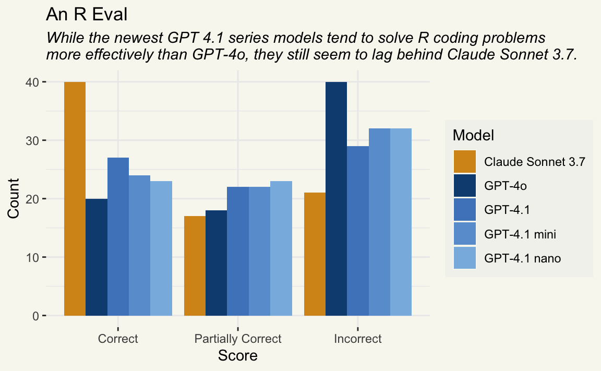
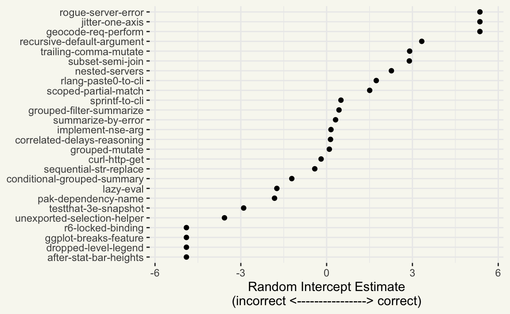

library(ellmer)
sonnet_3_7 <- chat_anthropic(model = "claude-3-7-sonnet-latest")
gpt_4o <- chat_openai(model = "gpt-4o")
gpt_4_1 <- chat_openai(model = "gpt-4.1")
gpt_4_1_mini <- chat_openai(model = "gpt-4.1-mini")
gpt_4_1_nano <- chat_openai(model = "gpt-4.1-nano")Yesterday, OpenAI dropped a new series of models called GPT 4.1, 4.1 mini, and GPT 4.1 nano. This line from their release post, specifically, caught my eye:
GPT‑4.1 is a significant step forward in the practical application of AI. By focusing closely on real-world developer needs—ranging from coding to instruction-following and long context understanding—these models unlock new possibilities for building intelligent systems and sophisticated agentic applications.
It’s no surprise to me that OpenAI’s newest drop tops benchmark after benchmark. That said, when I see news of new models beating out Claude Sonnet by various measures, I usually wait a week before coming to any conclusions; many developers seem to feel that the Claude series of models have some secret sauce, and I’m among them. Seeing this explicit focus on real-world coding and instruction-following piqued my curiosity, so I’m bypassing my usual “wait a week” policy to see what’s up.

As it happens, I’ve been working on a new tool called vitals for large language model evaluation in R. The package is still pretty early on in it’s development and is changing rapidly–so much so that its name has changed in the two weeks since I last wrote about it on this blog–but I’ll use it here to evaluate these models on an R coding benchmark.
tl;dr:
- This eval is a good measure for R coding problems, but doesn’t aim to measure instruction-following or long context understanding.
- The GPT 4.1 series of models does seem to improve on GPT-4o for solving R coding problems.
- Claude Sonnet 3.7 still outperforms GPT-4o and the GPT 4.1 series of models on R coding.
- The GPT 4.1 nano model seems to pack quite the punch for its price point; I’m curious whether it might be a good fit for a budget chores and gander engine.
Introducing vitals
vitals is an R port of the widely adopted Python framework Inspect. While the package doesn’t integrate with Inspect directly, it allows users to interface with the Inspect log viewer and shares much of its grammar and philosophy.
vitals describes LLM evals in three core components:
-
Datasets contain a set of labelled samples. Datasets are just a tibble with columns
inputandtarget, whereinputis a prompt andtargetis either literal value(s) or grading guidance. -
Solvers evaluate the
inputin the dataset and produce a final result (hopefully) approximatingtarget. In vitals, the simplest solver is just an ellmer chat (e.g.ellmer::chat_claude()) wrapped ingenerate(), i.e.generate(ellmer::chat_claude())), which will call the Chat object’s$chat()method and return whatever it returns. -
Scorers evaluate the final output of solvers. They may use text comparisons, model grading, or other custom schemes to determine how well the solver approximated the
targetbased on theinput.
In this blog post, we’ll apply a solver powered by four different models to a dataset of R coding problems. Our baseline will be Claude 3.7 Sonnet, as this is my daily driver for coding assistance and a peer to GPT 4.1 in pricing. Then, I’ll also add GPT-4o, as I know this has been the model of choice for many other folks. Finally, I’ll include the three new models for the GPT series: 4.1, 4.1 mini, and 4.1 nano.
In ellmer, here’s how we define those model connections:
Note
If you’re interested in how Gemini’s newest 2.5 Pro release stacks up on this eval, check out this post from two weeks ago.
Note that I needed to configure a ANTHROPIC_API_KEY and OPENAI_API_KEY to connect to these models, respectively. These new models are quite cheap compared to Claude 3.7 Sonnet and GPT-4o! Their pricing per million tokens is as follows
# A tibble: 5 × 3
Name Input Output
<chr> <chr> <chr>
1 Claude 3.7 Sonnet $3.00 $15.00
2 GPT-4o $3.75 $15.00
3 GPT-4.1 $2.00 $8.00
4 GPT-4.1 mini $0.40 $1.60
5 GPT-4.1 nano $0.10 $0.40 Altogether, the data underlying this blog post took around $3 USD to generate.
An R Eval dataset
We’ll use a dataset that ships with vitals called are, or “An R Eval.” From the are docs:
An R Eval is a dataset of challenging R coding problems. Each
inputis a question about R code which could be solved on first-read only by human experts and, with a chance to read documentation and run some code, by fluent data scientists. Solutions are intargetand enable a fluent data scientist to evaluate whether the solution deserves full, partial, or no credit.
glimpse(are)Rows: 26
Columns: 7
$ id <chr> "after-stat-bar-heights", "conditional-grouped-sum…
$ input <chr> "This bar chart shows the count of different cuts …
$ target <chr> "Preferably: \n\n```\nggplot(data = diamonds) + \n…
$ domain <chr> "Data analysis", "Data analysis", "Data analysis",…
$ task <chr> "New code", "New code", "New code", "Debugging", "…
$ source <chr> "https://jrnold.github.io/r4ds-exercise-solutions/…
$ knowledge <list> "tidyverse", "tidyverse", "tidyverse", "r-lib", "…At a high level:
-
title: A unique identifier for the problem. -
input: The question to be answered. -
target: The solution, often with a description of notable features of a correct solution. -
domain,task, andknowledgeare pieces of metadata describing the kind of R coding challenge. -
source: Where the problem came from, as a URL. Many of these coding problems are adapted “from the wild” and include the kinds of context usually available to those answering questions.
Notably, these coding problems look like a typical chat, so the eval doesn’t measure instruction-following / structured output specifically.
For the purposes of actually carrying out the initial evaluation, we’re specifically interested in the input and target columns. Let’s print out the first entry in full so you can get a taste of a typical problem in this dataset:
cat(are$input[1])This bar chart shows the count of different cuts of diamonds,
and each bar is stacked and filled according to clarity:
```
ggplot(data = diamonds) +
geom_bar(mapping = aes(x = cut, fill = clarity))
```
Could you change this code so that the proportion of diamonds
with a given cut corresponds to the bar height and not the
count? Each bar should still be filled according to clarity.Here’s the suggested solution:
cat(are$target[1])Preferably:
```
ggplot(data = diamonds) +
geom_bar(aes(x = cut, y = after_stat(count) /
sum(after_stat(count)), fill = clarity))
```
The dot-dot notation (`..count..`) was deprecated in ggplot2
3.4.0, but it still works:
```
ggplot(data = diamonds) +
geom_bar(aes(x = cut, y = ..count.. / sum(..count..), fill =
clarity))
```
Simply setting `position = "fill" will result in each bar
having a height of 1 and is not correct.For now, are was publicly shared after the knowledge cutoff of each of these models, so the answers to these questions (likely) aren’t yet incorporated into the models’ weights.
A baseline model
LLM evaluation with vitals happens in two main steps:
First, use Task$new() to situate a dataset, solver, and scorer in a Task. Tasks are R6 objects that define important methods and data structures for LLM evaluation. Below, I use generate() as a solver, currently the only built-in solver supplied by the package. Think of it like Chat objects’ $chat() method with some bells and whistles—parallel requests, some nice progress functionality, and lots of logging. generate() returns a function that has one argument, solver_chat, which takes an ellmer Chat; you can set a default Chat by supplying it to generate() itself. The scorer, model_graded_qa(), uses model grading (or “LLM-as-a-judge”) to score the solver’s responses. Different models exhibit different behaviors as judges, so I use the same model (Claude Sonnet 3.7) as the judge regardless of which model is being evaluated.
are_task <- Task$new(
dataset = are,
solver = generate(),
scorer = model_graded_qa(
scorer_chat = sonnet_3_7,
partial_credit = TRUE
),
epochs = 3,
name = "An R Eval"
)
are_taskAn evaluation task AnREval.Second, use Task$eval() to evaluate the solver, evaluate the scorer, and then explore a persistent log of the results in an interactive viewer.
are_sonnet_3_7 <- are_task$clone()
are_sonnet_3_7$eval(solver_chat = sonnet_3_7)
Note
You can also run $eval() step-by-step, if you want; $eval() just calls $solve(), $score(), $log(), and $view() in sequence.
After evaluation, the task contains information from the solving and scoring steps. Here’s what the model responded to that first question with:
cat(are_sonnet_3_7$samples$result[1])To change the bar chart from showing counts to showing
proportions of diamonds with each cut, I'll modify the code to
use proportions instead of raw counts while keeping the
clarity breakdown within each bar.
Here's the modified code:
```r
ggplot(data = diamonds) +
geom_bar(mapping = aes(x = cut, fill = clarity),
position = "fill") +
labs(y = "Proportion")
```
This change:
1. Adds `position = "fill"` to the `geom_bar()` function,
which normalizes each bar to have the same height (1.0 or
100%) and shows the proportional breakdown of clarity
categories within each cut.
2. Adds `labs(y = "Proportion")` to relabel the y-axis, since
it now represents proportions rather than counts.
Each bar will now have the same height, representing 100% of
diamonds with that cut, and the colored segments within each
bar will show the proportional distribution of clarity
categories for that particular cut.Then, since we’ve supplied model_graded_qa() as the scorer, Claude Sonnet 3.7 will be supplied the input question, the grading guidance, and the solver’s output, and asked to determine whether the solution is incorrect, partially correct, or correct. Here’s Claude’s grading transcript for the solver’s first answer:
cat(are_sonnet_3_7$samples$scorer_chat[[1]]$last_turn()@text)I need to analyze whether the submitted answer correctly
addresses the task according to the criterion.
The submission suggests using `position = "fill"` in
`geom_bar()`, which normalizes each bar to have the same
height (1.0) and shows the proportional distribution of
clarity categories within each cut.
However, according to the criterion, this approach is
explicitly stated as incorrect. The criterion specifies that
we need to use either:
1. `after_stat(count) / sum(after_stat(count))` in newer
versions of ggplot2, or
2. `..count.. / sum(..count..)` in older versions of ggplot2
The reason this is different from `position = "fill"` is that
`position = "fill"` normalizes each cut category individually,
showing the proportion of different clarity values within each
cut. In contrast, the requested solution shows the proportion
of each cut relative to the total number of diamonds, while
still maintaining the clarity breakdown within each bar.
The submitted solution does not match what was specifically
requested. The criterion explicitly states that using
`position = "fill"` is not correct for this task.
GRADE: Ivitals ships with the Inspect Log Viewer, a small .js app that allows you to interactively explore evaluation logs. Especially the first few times you run an eval, the tool is super helpful for uncovering unexpected behavior in solving and scoring. I’ve embedded the viewer in this post so you can check out the problems in An R Eval and how effectively Claude Sonnet 3.7 handled them:
I’d encourage you to poke around in this app! You’ll certainly see some bugs that I’ve still yet to work out and some surprising behavior from the scorer, but there’s lots to be learned about how these models work from evaluation logs.
Evaluating the rest
We can evaluate the remaining models by cloning the original task and running $eval() with a new solver chat. First, to evaluate the previous GPT (non-thinking) generation, GPT-4o:
are_gpt_4o <- are_task$clone()
are_gpt_4o$eval(solver_chat = gpt_4o)
save(are_gpt_4o, file = "are_gpt_4o.rda")From here, it’s pretty rote. Evaluating each of GPT 4.1, 4.1 mini, and 4.1 nano on this dataset:
are_gpt_4_1 <- are_task$clone()
are_gpt_4_1$eval(solver_chat = gpt_4_1)are_gpt_4_1_mini <- are_task$clone()
are_gpt_4_1_mini$eval(solver_chat = gpt_4_1_mini)are_gpt_4_1_nano <- are_task$clone()
are_gpt_4_1_nano$eval(solver_chat = gpt_4_1_nano)I’ve also situated the logs for the above evaluations in the above app—just click the three stacked bars in the top right of the app to check out the logs for the remaining models.
Analysis
At evaluation time, vitals does a naive accuracy calculation that you can see displayed in the app, but in general is quite restrained in its analysis functionality. Instead, the package aims to get analysts to Happy Data Frame Land as quickly as possible using vitals_bind():
are_eval <-
vitals_bind(
`Claude Sonnet 3.7` = are_sonnet_3_7,
`GPT-4o` = are_gpt_4o,
`GPT-4.1` = are_gpt_4_1,
`GPT-4.1 mini` = are_gpt_4_1_mini,
`GPT-4.1 nano` = are_gpt_4_1_nano,
) %>%
rename(model = task) %>%
mutate(
model = factor(model, levels = c(
"Claude Sonnet 3.7",
"GPT-4o",
"GPT-4.1",
"GPT-4.1 mini",
"GPT-4.1 nano"
))
)
are_eval# A tibble: 390 × 5
model id epoch score metadata
<fct> <chr> <int> <ord> <list>
1 Claude Sonnet 3.7 after-stat-bar-heights 1 I <tibble>
2 Claude Sonnet 3.7 after-stat-bar-heights 2 I <tibble>
3 Claude Sonnet 3.7 after-stat-bar-heights 3 I <tibble>
4 Claude Sonnet 3.7 conditional-grouped-summary 1 P <tibble>
5 Claude Sonnet 3.7 conditional-grouped-summary 2 P <tibble>
6 Claude Sonnet 3.7 conditional-grouped-summary 3 C <tibble>
7 Claude Sonnet 3.7 correlated-delays-reasoning 1 P <tibble>
8 Claude Sonnet 3.7 correlated-delays-reasoning 2 C <tibble>
9 Claude Sonnet 3.7 correlated-delays-reasoning 3 P <tibble>
10 Claude Sonnet 3.7 curl-http-get 1 I <tibble>
# ℹ 380 more rowsIn this dataset, each row represents a single time a solver is invoked to answer a question:
modelgives the model used to solve a given questionidgives the question idepochidentifies the run/resample of the given questionscoresshows whether the scoring model (Claude Sonnet 3.7) identified the solver’s answer as Incorrect, Partially Correct, or Correct. It’s an ordinal factor withI < P < C.metadatais a list column containing just about all of the information that vitals collects during the evaluation process.
We’re interested in which of these three models are right more often. We have 26 unique questions, each resampled across 3 epochs for each of 5 models. For a cursory analysis, we could do the canonical Bar Chart Dodged By Model visualization:
are_eval %>%
mutate(
score = fct_rev(score),
score = fct_recode(
score,
"Correct" = "C", "Partially Correct" = "P", "Incorrect" = "I"
)
) %>%
ggplot(aes(x = score, fill = model)) +
geom_bar(position = "dodge") +
scale_fill_manual(values = c(
"Claude Sonnet 3.7" = "#d6941a",
"GPT-4o" = "#0f4c81",
"GPT-4.1" = "#4f86c6",
"GPT-4.1 mini" = "#6a9ed4",
"GPT-4.1 nano" = "#89b9e2"
)) +
labs(
x = "Score", y = "Count", fill = "Model",
title = "An R Eval",
subtitle = "While the newest GPT 4.1 series models tend to solve R coding problems\nmore effectively than GPT-4o, they still seem to lag behind Claude Sonnet 3.7."
) +
theme(plot.subtitle = element_text(face = "italic"))
Could the differences we’re seeing be attributed to random noise, though? We can use a hierarchical modeling technique called a mixed model to model the probability of each score (i.e., correct, etc.) as a function of the LLM. In this case, observations are not independent; some questions may be harder than others, and we’re repeating each question multiple times since we’ve set epochs = 3. A random intercept on the question id can help account for this variation. Since score is ordinal, we use a cumulative link mixed model rather than the usual suspect lme4::glmer():
summary(are_mod)Cumulative Link Mixed Model fitted with the Laplace approximation
formula: score ~ model + (1 | id)
data: are_eval
link threshold nobs logLik AIC niter max.grad cond.H
logit flexible 390 -268.62 551.24 272(1363) 1.69e-05 5.8e+01
Random effects:
Groups Name Variance Std.Dev.
id (Intercept) 13 3.605
Number of groups: id 26
Coefficients:
Estimate Std. Error z value Pr(>|z|)
modelGPT-4o -2.3531 0.4359 -5.398 6.72e-08 ***
modelGPT-4.1 -1.2544 0.4116 -3.048 0.002307 **
modelGPT-4.1 mini -1.6051 0.4135 -3.882 0.000104 ***
modelGPT-4.1 nano -1.6902 0.4195 -4.029 5.60e-05 ***
---
Signif. codes: 0 '***' 0.001 '**' 0.01 '*' 0.05 '.' 0.1 ' ' 1
Threshold coefficients:
Estimate Std. Error z value
I|P -2.3073 0.7963 -2.897
P|C 0.1779 0.7782 0.229First, let’s take a look at the Coefficients table. We have coefficients for each model other than Claude Sonnet 3.7, which is our “reference” model. Negative Estimates indicate lower odds of achieving higher rating categories, and the Pr(>|z|) values to their right show the p-values associated with those coefficients. We have evidence here that Claude Sonnet 3.7 is the strongest contender on this eval. While these estimates show that GPT 4.1 is closest to Claude Sonnet 3.7’s performance, followed by GPT 4.1 mini, 4.1 nano, and then 4o, we haven’t tested whether those pairwise differences could be attributed to random noise.
The Threshold coefficients describe whether ratings of Incorrect vs. Partially Correct and Partially Correct vs. Correct are meaningfully different from each other. The thresholds establish the baseline “difficulty” of achieving each category on the grading scale; more negative values for a pair of grades indicate that moving between those grades is relatively easy. If we saw that both coefficients here were quite negative, we could conclude that the rating system has a strong tendency toward higher ratings overall. In our case, those ratings seems relatively balanced.
Finally, the substantial Random effects value here shows that there’s substantial heterogeneity in question difficulty that’s being captured by the model. We can visualize these question-level effects:

Each of the rows here is a given question, where smaller random intercept estimates indicate that a question is more difficult. The most challenging sample was “after-stat-bar-heights” where, across all LLMs and epochs, 0 of 15 scores were categorized as correct. As this eval’s author, this is an indication to me that I should audit these questions and determine if they’re answerable at all; it’s fine if these are just hard questions, but if there’s not enough information in the question to actually answer it, or if the grading guidance is incorrect, this is a bug in the eval dataset rather than a measure of these models’ coding ability.
Note
Keep an eye out for a vitals vignette with a more thorough model-based analysis than this one in the near future.
Altogether:
- The GPT 4.1 series of models does seem to improve on GPT-4o for solving R coding problems.
- Claude Sonnet 3.7 still outperforms GPT-4o and the GPT 4.1 series of models on R coding.
- At least for this sort of problem, the GPT 4.1 nano model seems to pack quite the punch for its price point.
Given this set of releases’ apparent focus on instruction-following and the relatively strong performance of the nano model here, I’m now curious if GPT 4.1 nano (or even mini) would make for a good model to underlie the chores and gander packages, which require a model that’s very good at pattern-matching and instruction-following and don’t necessarily rely on extensive coding prowess otherwise.
Thank you to Max Kuhn for advising on the model-based analysis here.